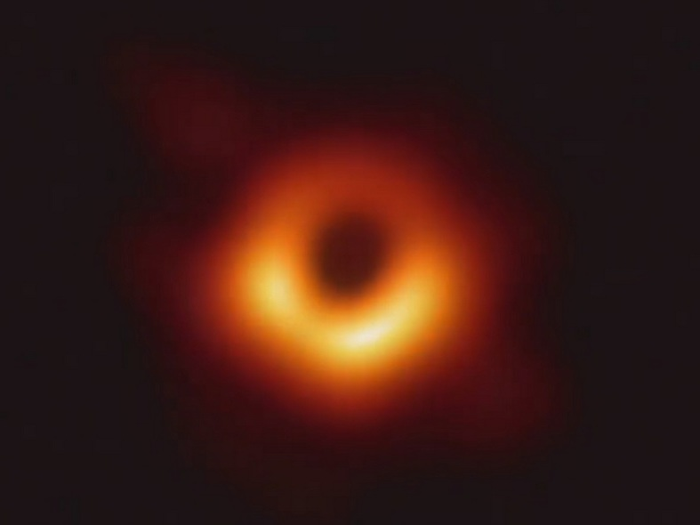

Forrige side🙂 🙁SchwarzschildgeometriPADLET
$$\begin{aligned}
a&b\end{aligned}$$

$$\begin{aligned}
a&b\end{aligned}$$ Bilde: Event Horizon Telescope Collaboration
$$\Delta s^2=\sst\Delta t^2-\frac{\Delta r^2}{\sst}-r^2\Delta\phi^2$$ Fikk du at massen til jorda er 4.45mm? Og at solas masse er 1.484 km? Så over til det andre rare her: hva skjer når r = 2M? Skjer det noe rart i formelen? Når hele massen M er samlet innenfor radius r = 2M, så har vi et sort hull. Dvs. hvis vi presser hele jordas masse innenfor en radius på 2M = 2 × 4.45mm så får vi et sort hull. Grensen r = 2M kalles hendelsehorisonten (event horizon). Innenfor der er unnslippingshastigheten større enn lyshastigheten.